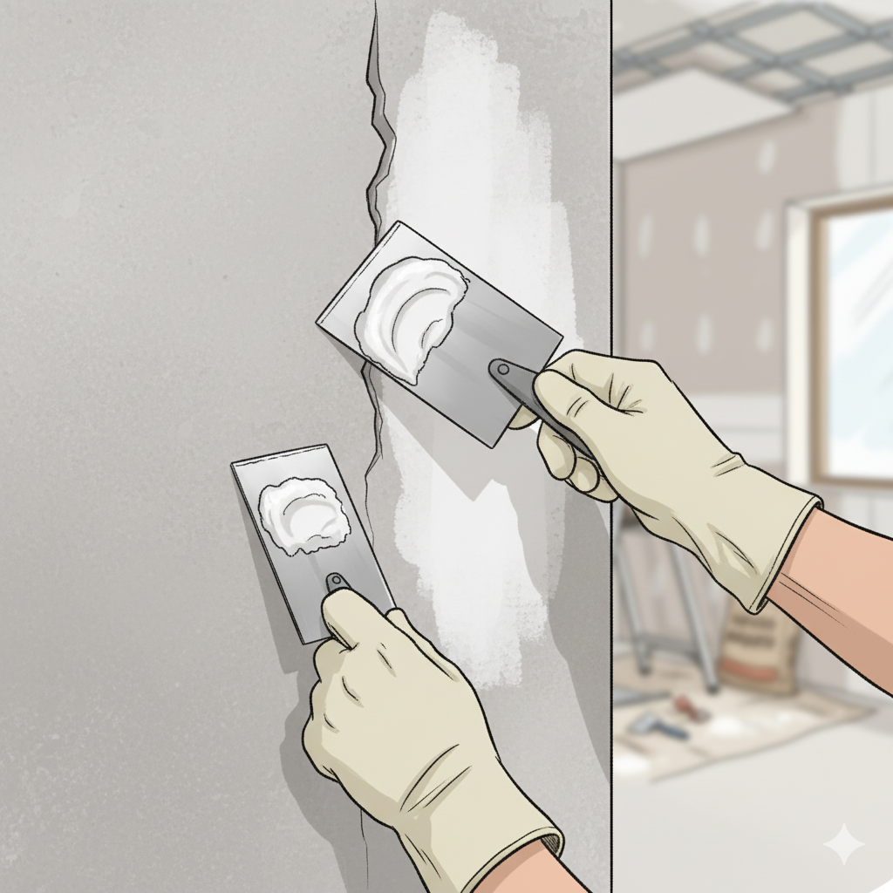
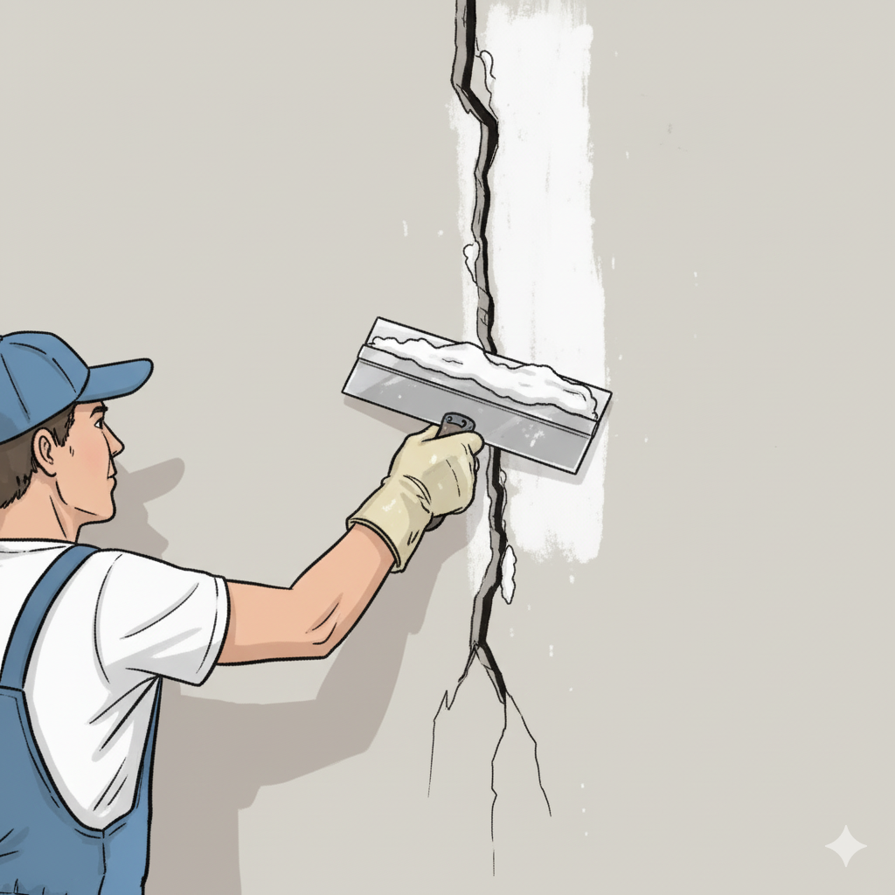
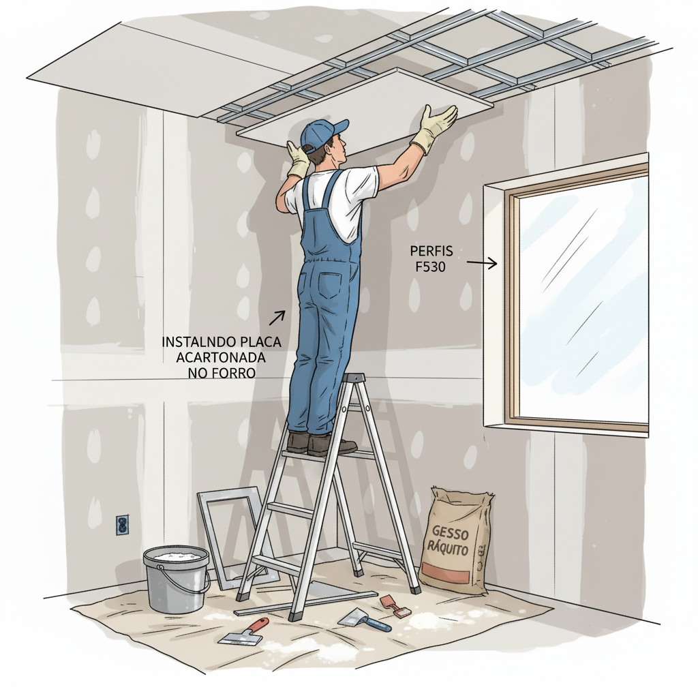
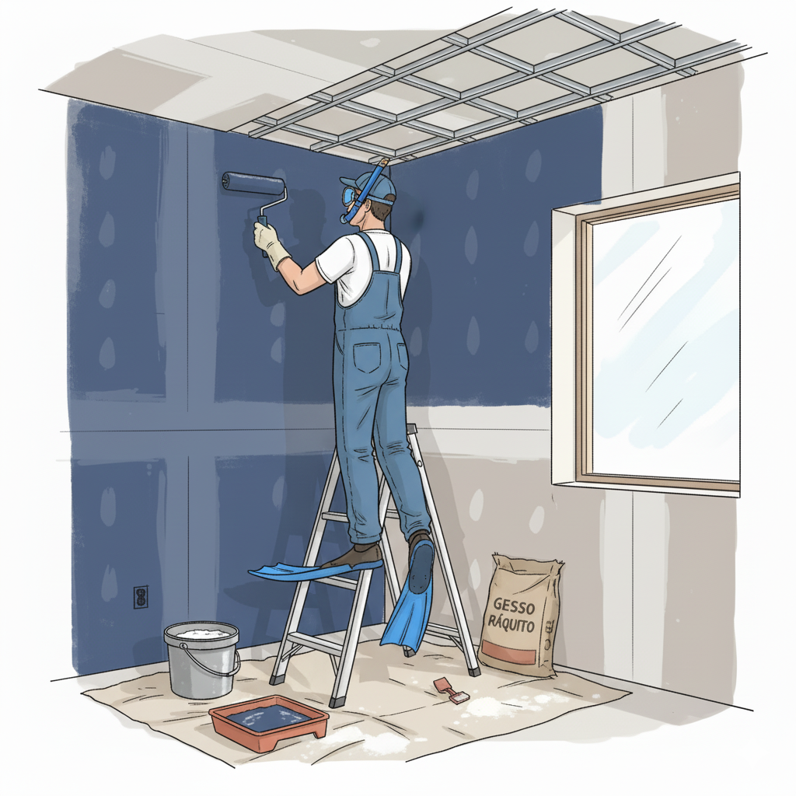

Muitas pessoas acreditam que reparos em drywall e gesso requerem um profissional especializado e caro. A verdade é que pequenos reparos são totalmente viáveis para qualquer pessoa, desde que você siga as instruções básicas e use o equipamento de proteção apropriado. Não é preciso ser um mestre de obras - apenas paciência, atenção aos detalhes e vontade de aprender.
💡 Mitos Sobre Reparos em Drywall - Você Pode Fazer!


SEGURANÇA EM PRIMEIRO LUGAR - Use sempre equipamento de proteção individual (EPI): luvas, óculos de proteção, máscara respiratória e roupas adequadas. Não trabalhe em altura sem escadas/andaimes seguros.
1 Cobrindo Rachaduras com Massa Corrida
Rachaduras pequenas e superficiais podem ser facilmente reparadas com massa corrida ou massa específica para drywall. Este é geralmente o primeiro passo para restaurar uma superfície danificada.
📋 Materiais Necessários
- Massa corrida ou massa de drywall
- Espátula de 20-30cm
- Lixa (granulação 120 ou 150)
- Pano úmido
- Luvas de proteção
- Máscara respiratória


1
Limpe a rachadura removendo sujeira e tinta solta com lixa
2
Limpe com um pano úmido e deixe secar completamente
3
Aplique a massa corrida com a espátula, preenchendo bem a fissura
4
Deixe secar conforme instruções da embalagem (geralmente 12-24h)
5
Lixe o excesso de massa com lixa fina
6
Se necessário, aplique uma segunda demão e repita o processo
💡 Dica Profissional
A chave é aplicar a massa em camadas finas. Nunca tente preencher tudo de uma vez - isso causará problemas de secagem.
2 Instalando Placas de Drywall nos Perfis
A instalação de placas de drywall nos perfis F530 é um processo que exige precisão, mas é perfeitamente viável para quem segue as instruções corretas. Presume-se que os perfis já estejam instalados e nivelados.
📋 Materiais Necessários
- Placa de drywall (120x180 ou 120x240cm)
- Parafusos para drywall (25-30mm)
- Furadeira ou parafusadeira
- Nível de bolha
- Fita métrica
- Tesoura ou faca para gesso
- Luvas e óculos de proteção
- Máscara respiratória

1
Meça e marque os pontos onde a placa será posicionada
2
Posicione a placa alinhada com o primeiro perfil F530
3
Use o nível para garantir que está perpendicular à superfície
4
Parafuse a placa nos perfis, deixando aproximadamente 15cm entre cada parafuso
5
Certifique-se de que os parafusos ficam ligeiramente encaixados, não salientes
6
Corte as bordas extras conforme necessário com faca para gesso
ATENÇÃO: Não aperte os parafusos demais - podem danificar ou esmagar a placa de drywall.
3 Instalando Moldura Decorativa no Forro
A moldura é o acabamento final que dá um toque profissional ao seu forro de gesso. Após o forro estar pronto e lixado, você pode instalar a moldura decorativa usando massa corrida como agente de fixação.
📋 Materiais Necessários
- Moldura/rodapé de gesso (120cm)
- Massa corrida (como agente colante)
- Espátula de 10-15cm
- Escada ou andaime
- Pano e esponja úmida
- Luvas, óculos e máscara

1
Limpe bem a superfície onde a moldura será colada
2
Aplique uma camada generosa de massa corrida na parte traseira da moldura
3
Posicione a moldura pressionando-a firmemente contra a parede/forro
4
Use o nível para garantir alinhamento perfeito
5
Limpe o excesso de massa com esponja úmida
6
Deixe secar completamente (12-24h) antes de qualquer acabamento
💡 Dica Profissional
A massa corrida funciona como um 'adesivo' natural para o gesso. Use o suficiente para que saia um pouco pelas bordas quando pressionada.
4 Pintando com Rolo - Técnica Básica
A pintura é o acabamento final que transformará seu reparo em algo invisível e profissional. Usar um rolo de pintura adequado e a técnica correta faz toda a diferença no resultado.
📋 Materiais Necessários
- Tinta adequada para drywall/gesso
- Rolo de espuma (6-9mm de espessura)
- Bandeja de pintura
- Pincel pequeno para cantos
- Plástico ou jornal para proteção
- Luvas de proteção
- Máscara leve

1
Proteja o chão e móveis com plástico ou jornal
2
Derrame a tinta na bandeja de pintura
3
Mergulhe o rolo na tinta até saturar bem (mas não escorrendo excessivamente)
4
Comece pintando os cantos com o pincel pequeno
5
Aplique o rolo em movimentos em 'W' ou 'M', depois complete preenchendo
6
Use pressão constante e movimentos suaves de cima para baixo
7
Deixe secar a primeira demão e aplique segunda demão conforme necessário
💡 Dicas Profissionais
- Quanto mais fina e uniforme a camada, melhor o resultado final
- Não sobrecarregue o rolo com tinta - evita escorrimentos
- Sempre pinte de cima para baixo
- Aplique 2 demãos para cobertura uniforme
🛡️ Segurança Sempre em Primeiro Lugar
Equipamentos de Proteção Individual (EPIs) são essenciais para qualquer tipo de reparo. Nunca inicie um trabalho sem os equipamentos adequados.
✓ Luvas de proteção nitrílica
✓ Óculos de segurança com proteção lateral
✓ Máscara respiratória N95 (especialmente ao lixar)
✓ Roupas adequadas (sem mangas soltas)
✓ Sapatos de segurança com solado antiderrapante
✓ Escada/andaime em bom estado e seguro
✓ Área bem ventilada
✓ Kit de primeiros socorros à mão
⚠️ Quando Procurar Ajuda Profissional:
Procure ajuda profissional se: a rachadura for estrutural (em zigzag ou múltiplas), houver infiltração de água, a placa estiver muito danificada, ou você se sentir inseguro a qualquer momento. Sua segurança é mais importante que economizar dinheiro.
Procure ajuda profissional se: a rachadura for estrutural (em zigzag ou múltiplas), houver infiltração de água, a placa estiver muito danificada, ou você se sentir inseguro a qualquer momento. Sua segurança é mais importante que economizar dinheiro.